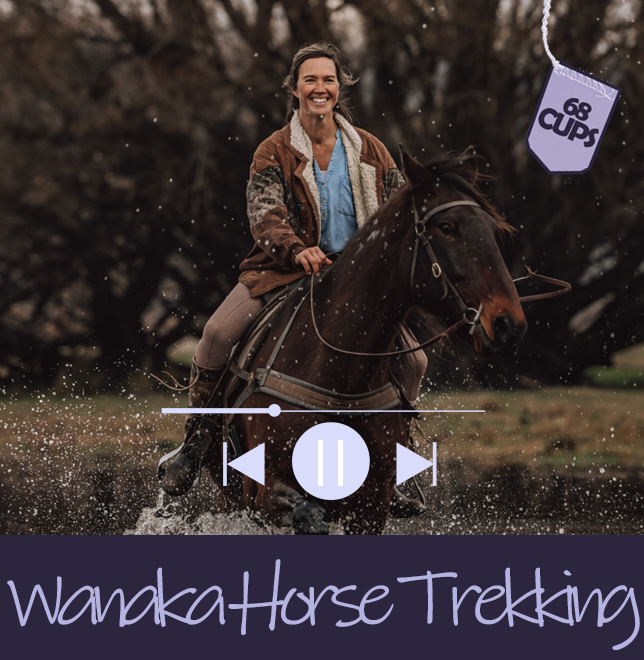
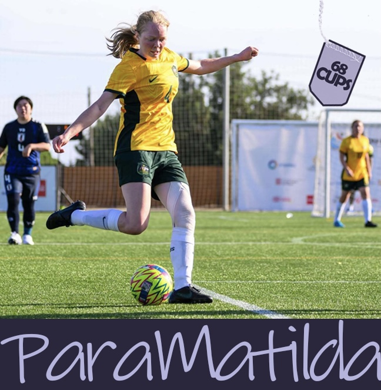
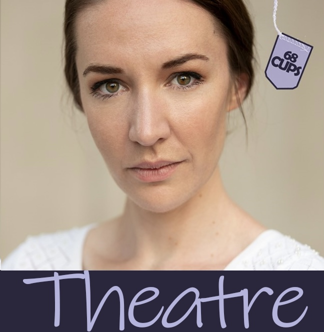
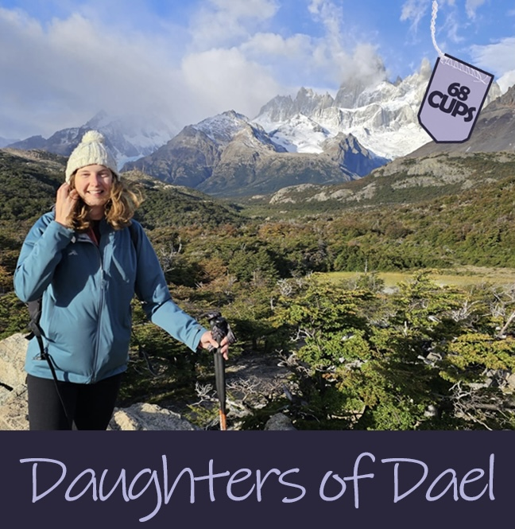
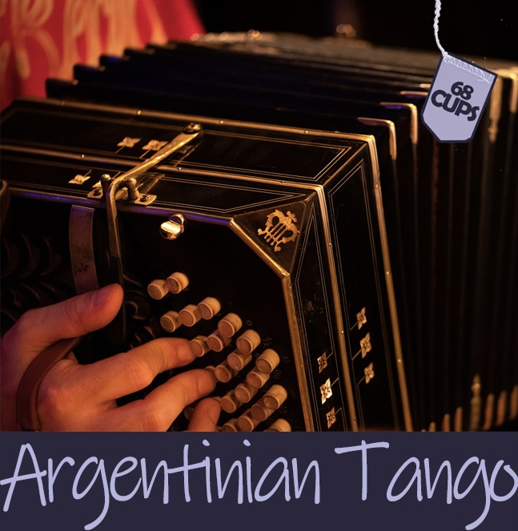
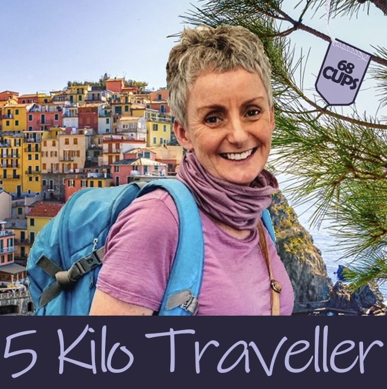
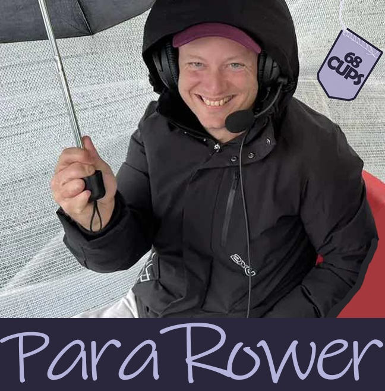
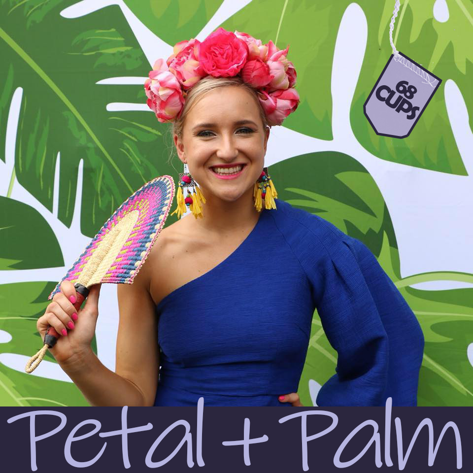

-
 Wānaka Horse Trekking
Just an hour's drive from Queenstown, Wānaka offers incredible landscapes, just waiting to be discovered on happy horses.
Saddle up and take a ride with Samantha Goos, founder and owner of Wānaka Horse Trekking.
The Netherlands didn't feel like home for Sam, and she was ready for a new adventure, to bring her inner childhood horsey dream to life in New Zealand!
Sam has found such a beautiful part of the world, with Wanaka having so much to offer, and she loves sharing years of experience in the New Zealand backcountry with a charming steed, allocated suitably to their rider.
Inspire to be curious, trust the process, keep on dreaming big, be kind and step up.
-
 ParaMatilda Bec Jones
The ParaMatildas have recently returned from Spain with a 6-2 victory against the USA in the IFCPF Women's World Cup Final, and Bec Jones is part of the first ever Australian football team to win a World Cup!
Bec is part of changing the face of football and women's sport in Australia.
And she has achieved this after having survived Autoimmune Encephalitis, where the body's immune system attacks the brain, and a stroke which impacted mobility on Bec's left hand side.
What saved her, is plasma. Receiving an Intravenous Immunoglobulin for the first time, was the day that Bec knew she was going to survive. Listen in and learn how your plasma donation can transform a person's life.
Photo: Mark Avellino/Football Australia
-
 Lexi Sekuless Productions
Theatregoing has not yet recovered since the COVID pandemic given the numerous streaming services in the comfort of our homes, but Canberra actor-producer Lexi Sekuless is indefatigable and inspirational, fighting to reinvigorate interest and get butts on seats. She gets knocked down, but hasn't lost her powerful voice and Lexi's passion to fight for the foot soldiers is admirable. Tune in for some behind-the-scene insight into the independent theatre realm.
-
 The Daughters of Dael
Léa Zeestraten has self-published the first book of a four part series, the Daughters of Dael, a heartwarming and exciting exploration of adventure, friendship and self discovery.
But there is more to Léa than her work as an author. At the age of 24 she was diagnosed with congenital heart disease, a heart condition that one is born with, and basically means having holes in one's heart, like a cheese grater, that needed patching up to survive.
-
 Argentinian Tango
A dance for all the seasons! Delving into the Argentinian Tango scene with an experienced dancer, Jamie, to learn about the cultural elements behind it, the structure of it (or lack thereof!) and insight into the typical accompanying instrument, the Bandoneon.
-
 The 5 Kilo Traveller
Katherine Leamy's travel style is to casually shrug on, a well thought out 5kg backpack (give or take a few hundred grams, for hardcopy novels) and step out with confidence. If this intrigues you, have a listen and start travelling with ease!
-
 Stuart John
Tune in with Stuart regaling his tales as a tour guide in Europe and his passion for sports as a para-rower and commentator.
-
 Petal + Palm
Jess has opened up a little boutique store on the main street of Wellington, NSW with the intentions of boosting the potential of the rural town and using it as a platform to showcase the "Women of Wellington".
-

Welcome to 68 Cups